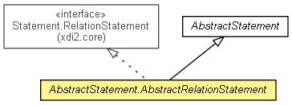

xdi2.core.impl
Class AbstractStatement.AbstractRelationStatement
java.lang.Object
 xdi2.core.impl.AbstractStatement
xdi2.core.impl.AbstractStatement.AbstractRelationStatement
xdi2.core.impl.AbstractStatement
xdi2.core.impl.AbstractStatement.AbstractRelationStatement
- All Implemented Interfaces:
- Serializable, Comparable<Statement>, Statement, Statement.RelationStatement
- Enclosing class:
- AbstractStatement
public abstract static class AbstractStatement.AbstractRelationStatement
- extends AbstractStatement
- implements Statement.RelationStatement

- See Also:
- Serialized Form
AbstractStatement.AbstractRelationStatement
public AbstractStatement.AbstractRelationStatement()
getContextNodeXri
public XDI3Segment getContextNodeXri()
- Description copied from interface:
Statement
- Returns the context node XRI of this statement.
- Specified by:
getContextNodeXri in interface Statement
getRelation
public Relation getRelation()
- Specified by:
getRelation in interface Statement.RelationStatement
Copyright © 2013. All Rights Reserved.